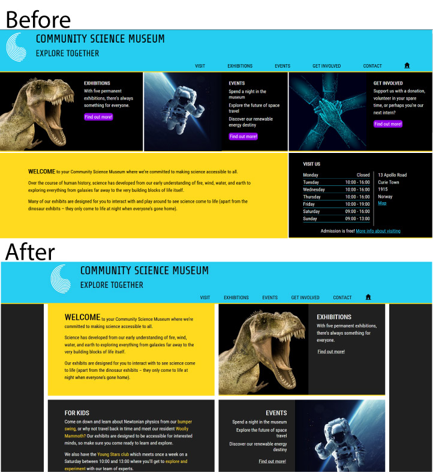

Semester Project 1 - Community Science Museum
Changelog:
| Change Made | Reason for Change | Screenshot |
|---|---|---|
| Ids have been added to contact form inputs | These were missing before | |
| Form validation has been added to the contact form | Blank forms and form fields can no longer be submitted | |
| Changed background from black to dark grey (#202020) | Reduces some of the harshness that the high contrast previously resulted in | |
| Removed final media query grid layouts (those that were for screen widths greater than 1550px) | These layouts resulted in pages filled with content from screen edge to screen edge, which on larger screens was a bit overwhelming |  |
| Increased the grid gap from 6px to 18px | This provides a little more clarity and makes it easier to scan through content | |
| Main title now links to home | Most users are familiar with this feature from other sites and therefore expect it |  |
| H1 and H2 sizes increased for larger (>768px) screens | This makes it easier for the user to know where they are and to scan through page content | |
| Purple removed from links in navbar hover state and links on home page | It wasn't very pretty as there is already a lot of colour on the page | |
| Contact form submit button changed styling and added hover and focus styles | It looks prettier and provides a better user experience | |
| Changed html article tags to section tags | This is more semantically correct |
Cross-Course Project - GameHub
Changelog:
| Change Made | Reason for Change | Screenshot |
|---|---|---|
| 'Help & Support' changed to 'Contact & Support' | This was suggested in tutor feedback and I agree it is more helpful to the user | N/A |
| Removed 'mini-cart' from checkout page | This was superfluous as the mini cart links to the checkout page and displays information which is already available on the checkout page | |
| Items can now be removed from the cart on the checkout page | This is basic functionality that users expect | |
| Main background changed to very dark grey (#101010) | This provides a little bit of contrast between interactive content such as game cards and the background | |
| Centered game info on game details page | It's more natural to have content centered on the page | |
| Style changes made to sell page | The form is a little more presentable and an image has been added for larger screens | |
| Selling a game requires the user to be logged in | This is standard for marketplace sites. Local storage is used to check whether the user is logged in and the html is adjusted accordingly | |
| Form validation added to sell game form | Form cannot be submitted if it is lacking vital information |  |
Project Exam 1 - Transform Tomorrow
Changelog:
| Change Made | Reason for Change | Screenshot |
|---|---|---|
| Added a footer | Makes the pages feel a bit more complete | |
| Added 'back to top' button to footer using code found here | Provides easy navigation to the top of the page | |
| Added a quote to the footer which is randomly selected from a list of quotes | This seemed like a nice way to end each page and there was not much else to put in the footer due to small number of already easily accessible links | |
| Background colour was made lighter | This is a more bright and optimistic colour which I feel better fits the tone of the site, and can be used as there are no longer any areas where I want to use white text on top of this background |  |
| Added CSS variables for font sizes and colours | Changes to colour and font size can now be made across the whole site much more easily |